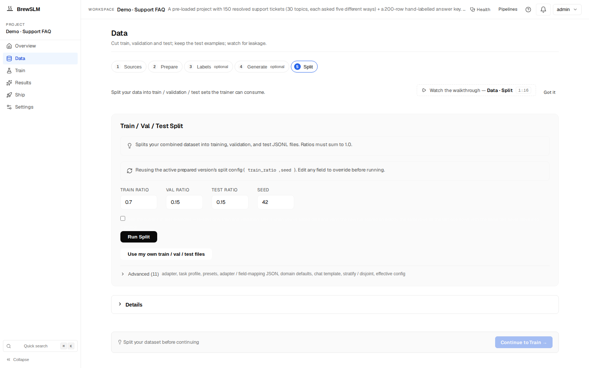

Data gates: leakage, splits, review and contamination
Most bad results we have chased came from the data, not the trainer. These are the checks BrewSLM runs on your rows before a run, what each one compares, the thresholds, and which ones only warn.
A held-out score means something only if the held-out rows were really held out. Most of the checks on this page exist because we got that wrong once. Each section says what is compared with what, the threshold, and whether it blocks or just warns. Thresholds come from backend/app/services/data_health_service.py unless another file is named.
Where they run
Data has five steps: Sources, Prepare, Labels, Generate and Split. Labels and Generate are optional. The checks show up as Coach notices on the step they belong to, and in the Readiness overview under Sources. Training itself has one hard gate, covered last.

Answer key vs training data
The answer key (the hand-checked rows every run is scored against) is compared row by row with everything that can train: the training split, cleaned data and synthetic rows. A row leaks if it matches exactly after normalising, or if the two rows share at least 90% of their word set (Jaccard ≥ 0.9). Rows under 4 tokens are matched only exactly, since short rows overlap by accident. Any leak warns. When 10% or more of the answer key leaks, the signal's severity is "block".
It is a signal, not a refusal: the Coach raises it and sends you to the split, but there is no one-click fix, because deciding which copy to delete is a judgement call. One consequence we accepted: the practice answer key is no longer a default training source. The leakage check flagged our own defaults for it.
Split vs split
The same comparison runs across the prepared splits: train against validation, train against test, validation against test, with the same 0.9 threshold and the same 10% block line. The Coach's advice is to re-split with dedup, or keep a fixed test set and drop the overlap from train. Rows that share long boilerplate (a tool catalog, a standard header) can look like duplicates when they aren't. There is an opt-in setting that ignores lines present in at least half the rows, and the tool-catalog block of tool-call rows is ignored automatically.
What a split does by default
- Ratios 0.8 / 0.1 / 0.1, seed 42; they must sum to 1 (
backend/app/services/dataset_service.py:2010-2013). - Exact and near-duplicate rows (same 0.9 Jaccard) are dropped before splitting and counted in the manifest.
- When rows carry a categorical
label, the split stratifies by it. A class with fewer than 3 rows goes to train and is listed in the report. - Each split writes the active
prepared/files and a snapshot underprepared/versions/(the last 10 are kept) with a SHA-256 per file, so you can go back to any of them.
The option that matters most when you iterate is Keep the current test examples. It keeps the active test rows byte for byte and re-splits only train and validation, removing any train or validation row equal to a kept test row. Without it, adding data reshuffles the test set and your next score is on different rows. Our sensitive-data tagger's early runs were scored on 29 texts and later ones on 44 for exactly that reason.
If your data already comes split, Use my own train / val / test files imports the three files with exact membership: no shuffle, no ratio, no dedup. It refuses any training row whose input also appears in test, or drops it if you ask. The NTSB extractor used this: 9,931 / 1,256 / 1,234 rows split by event id, with 0 shared inputs.
Cleaning checks
Prepare cuts documents into passages of about 1,000 characters on sentence boundaries (overlap 100), redacts PII by default, and removes repeated page headers and footers. That last one came from IRS Publication 17, where 173 of 1,103 first-pass passages carried "Page 9 of 142" style furniture. The health checks warn when 10% of documents fail to parse (block at 25%), when 10% score low on quality (block at 30%), and when 10% are duplicates by content hash (block at 30%). A corpus below the recipe's recommended size warns; an empty training split blocks.
The synthetic review queue
Generated rows from a playbook land as pending, and pending rows don't train. You accept or reject them in bulk, grouped by source, class, cluster, job, backend or a pre-screen verdict. Rejected rows are not deleted: they stay on disk with their reason, grouped by reason, and you can restore a group or purge only the reasons you choose. An optional model pre-screen marks rows pass, fail or unsure with a reason code. It doesn't accept anything by itself, and accepting a group on an uncalibrated judge's word asks you to confirm first. Rows from the documents → Q&A flow are the exception: that flow filters its own output and writes rows as accepted.
Benchmark contamination
On 2026-10-17 we found that a seeding prompt had carried values from a public benchmark into our training rows: 32 values, 591 times. Per-type scores on that benchmark were overstated by 0.03 to 0.15. Two checks came out of it.
When you import an external benchmark, every gold value it has (entity texts, answers) is looked for verbatim in your training rows, case- and whitespace-insensitive, skipping values under 4 characters. Severity is the share of distinct values found: clean, low (under 2%), notable (2% or more) or severe (10% or more). A hit is evidence, not proof; a common first name will read "low". Benchmark rows that equal training rows are dropped from the benchmark at import.
Before generation, the prompt itself is checked. Seed-document prompts and span-synthesis prompts are scanned for whole-word matches against the project's benchmark gold values, and a match refuses the request (HTTP 400, PROMPT_CARRIES_BENCHMARK_VALUES) listing up to 25 offenders. You can override it, and the override is recorded on the job.
The one hard gate at Train
Training refuses to start when none of up to 256 sampled training rows has a target field (answer, completion, output, response; plus label for classification and entities for span tagging), or the training file is missing or empty (backend/app/services/training_data_gate.py). We added it after a 10.5-hour run trained on text-only rows and finished with F1 0. Everything else on this page informs; this one stops you.
Run the checks on your project
- Data → Sources → Details → Readiness overview lists every signal with its severity.
- Data → Split: tick Keep the current test examples before re-splitting a project you have already scored.
- Data → Labels → Review queue: group rejected rows by reason, restore or purge per group.